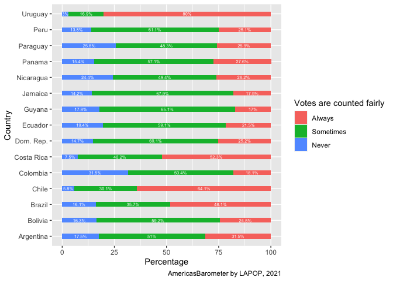
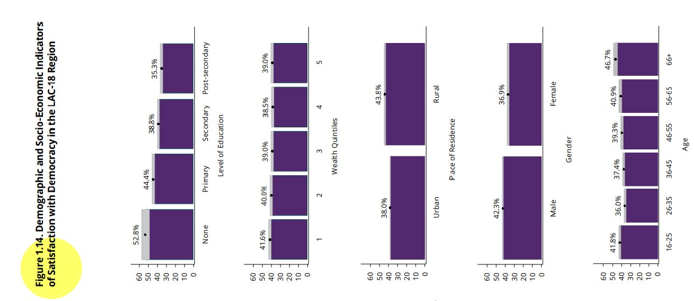
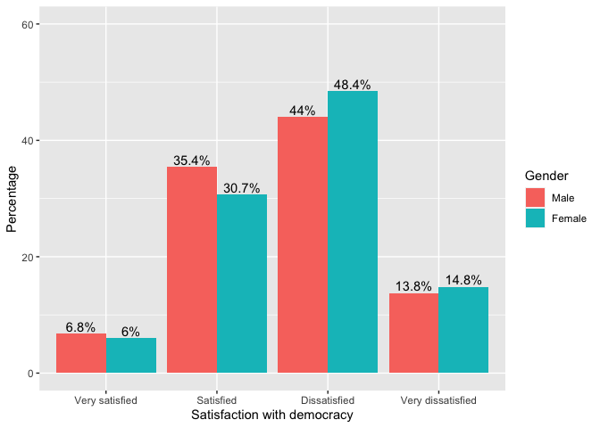
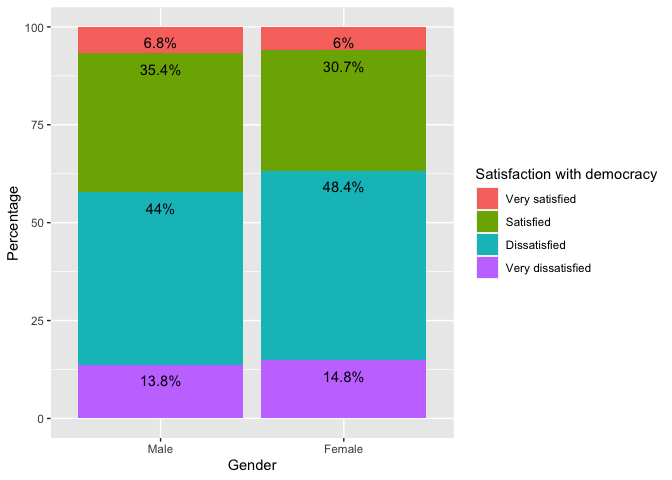
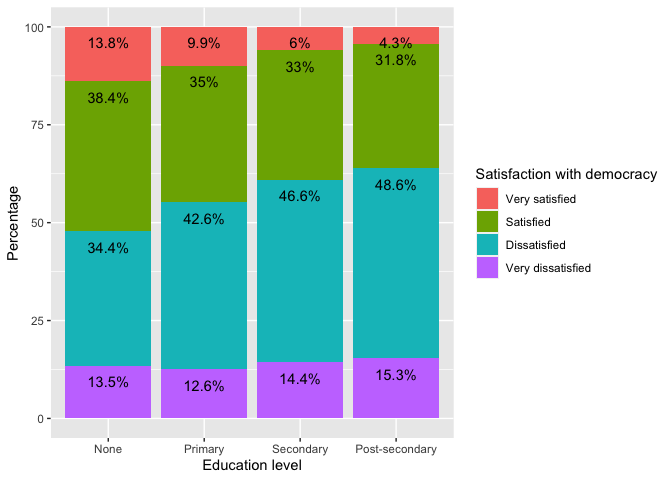

Cross-tables with the AmericasBarometer
Introduction
The previous sections corresponding to the t-test and the ANOVA test are about the relationship of a numerical variable with a categorical variable, in such a way that the goal is to compare and extrapolate the means of a numerical variable by groups of a categorical variable.
In this section we will look at bivariate relationships between two categorical (or factor in R terminology) variables. This evaluation is done using cross-tables (or contingency tables) and is evaluated using the chi-square test.
About the dataset
The data we are going to use should be cited as follows: Source: AmericasBarometer by the Latin American Public Opinion Project (LAPOP), wwww.LapopSurveys.org. We can download the data freely here.
This section loads a trimmed database, originally in SPSS (.sav) format. It is recommended to clean the Environment before starting this section.
This dataset is hosted in the “materials_edu” repository of the LAPOP
account on GitHub. Using the library rio and the command
import, we can import this database from this repository.
In addition, the data from countries with codes less than or equal to 35
are selected, that is, the observations of the United States and Canada
are eliminated.
library(rio)
lapop18 = import("https://raw.github.com/lapop-central/materials_edu/main/LAPOP_AB_Merge_2018_v1.0.sav")
lapop18 = subset(lapop18, pais<=35)We also load the dataset for the 2021 round.
lapop21 = import("https://raw.github.com/lapop-central/materials_edu/main/lapop21.RData")
lapop21 = subset(lapop21, pais<=35)Votes are counted fairly
The report The Pulse of Democracy for the 2021 round of the AmericasBarometer reports the results of variable COUNTFAIR1. Votes are counted correctly and fairly. Would you say it happens always, sometimes or never? Percentages are presented by countries.
This figure is reporting the cross of a categorical variable (or factor in R language), called “countfair1” that has three categories (never, sometimes and always), with other categorical variables called “pais” that has 15 categories (each country presented).

This variable is imported in R as numeric. For be able to work with
this variable, we have to declare it as a factor variable, using the
command as.factor. We then label this variable with the
command levels.
library(haven)
lapop21$countfair1r = as.factor(lapop21$countfair1)
levels(lapop21$countfair1r) = c("Always", "Sometimes", "Never")
table(lapop21$countfair1r)##
## Always Sometimes Never
## 3477 5235 1698Cross-table of votes are counted fairly by country
Before replicating this figure, it is useful to see results in a
cross-table. We can create this table with the command
table. However, this table presents absolute frequencies.
Also, this table shows that this question was not fielded in some
countries.
table(lapop21$pais, lapop21$countfair1r)##
## Always Sometimes Never
## 1 0 0 0
## 2 0 0 0
## 3 0 0 0
## 4 0 0 0
## 5 186 351 173
## 6 354 272 51
## 7 215 445 120
## 8 130 362 226
## 9 158 435 143
## 10 169 408 112
## 11 177 430 97
## 12 169 315 168
## 13 428 201 39
## 14 525 111 20
## 15 346 257 116
## 17 216 350 120
## 21 170 406 99
## 22 0 0 0
## 23 122 464 97
## 24 112 428 117To reproduce the relative frequencies, we have to use the command
prop.table. This command returns the percentages for the
total by defect. We want to calculate percentages by rows (that is, by
country) in this case.
prop.table(table(lapop21$pais, lapop21$countfair1r))##
## Always Sometimes Never
## 1 0.000000000 0.000000000 0.000000000
## 2 0.000000000 0.000000000 0.000000000
## 3 0.000000000 0.000000000 0.000000000
## 4 0.000000000 0.000000000 0.000000000
## 5 0.017867435 0.033717579 0.016618636
## 6 0.034005764 0.026128722 0.004899135
## 7 0.020653218 0.042747358 0.011527378
## 8 0.012487992 0.034774256 0.021709894
## 9 0.015177714 0.041786744 0.013736792
## 10 0.016234390 0.039193084 0.010758886
## 11 0.017002882 0.041306436 0.009317963
## 12 0.016234390 0.030259366 0.016138329
## 13 0.041114313 0.019308357 0.003746398
## 14 0.050432277 0.010662824 0.001921230
## 15 0.033237272 0.024687800 0.011143132
## 17 0.020749280 0.033621518 0.011527378
## 21 0.016330451 0.039000961 0.009510086
## 22 0.000000000 0.000000000 0.000000000
## 23 0.011719500 0.044572526 0.009317963
## 24 0.010758886 0.041114313 0.011239193To calculate the percentages by rows, we have to add the
specification , 1 in prop.table. We can also
nest this code in the command addmargins to calculate the
sum of horizontal percentages. These are the same percentages that are
presented in a bar plot below. These percentages are not equal to those
presented in Figure 2.5 because this calculation does not include survey
weights.
addmargins(prop.table(table(lapop21$pais, lapop21$countfair1r), 1)*100, 2)##
## Always Sometimes Never Sum
## 1
## 2
## 3
## 4
## 5 26.197183 49.436620 24.366197 100.000000
## 6 52.289513 40.177253 7.533235 100.000000
## 7 27.564103 57.051282 15.384615 100.000000
## 8 18.105850 50.417827 31.476323 100.000000
## 9 21.467391 59.103261 19.429348 100.000000
## 10 24.528302 59.216255 16.255443 100.000000
## 11 25.142045 61.079545 13.778409 100.000000
## 12 25.920245 48.312883 25.766871 100.000000
## 13 64.071856 30.089820 5.838323 100.000000
## 14 80.030488 16.920732 3.048780 100.000000
## 15 48.122392 35.744089 16.133519 100.000000
## 17 31.486880 51.020408 17.492711 100.000000
## 21 25.185185 60.148148 14.666667 100.000000
## 22
## 23 17.862372 67.935578 14.202050 100.000000
## 24 17.047184 65.144597 17.808219 100.000000Bar graph of votes are counted fairly by country
In the same way as we did in the section about ordinal variables, available here, we can replicate the comparative graph by country we have to create a contingency table between variables “countfair1” and “pais”. This cross-table is saved in an abject “count_pais”. We should note that the dataframe include a row for each value of “countfair1” in each country. In this way, we have 3 options x 20 countries = 60 rows.
count_pais = as.data.frame(round(prop.table(table(lapop21$pais, lapop21$countfair1r), 1), 3)*100)
count_paisThis table presents NAs for countries where the question “countfair1”
was not asked. For this reason, we have to drop rows where there is no
data. We can do this with the specification [-c(rows)].
After that we create a vector with the names of countries. We repeat
names three times (15 countries x 3 options). We dd this vector to the
dataframe in column “country”.
count_pais = count_pais[-c(1:4,18,21:24,38,41:44,58),]
country = c("Nicaragua","Costa Rica", "Panama", "Colombia", "Ecuador", "Bolivia", "Peru",
"Paraguay", "Chile", "Uruguay", "Brazil", "Argentina", "Dom. Rep.","Jamaica", "Guyana", "Nicaragua","Costa Rica", "Panama", "Colombia", "Ecuador", "Bolivia", "Peru",
"Paraguay", "Chile", "Uruguay", "Brazil", "Argentina", "Dom. Rep.","Jamaica", "Guyana","Nicaragua","Costa Rica", "Panama", "Colombia", "Ecuador", "Bolivia", "Peru",
"Paraguay", "Chile", "Uruguay", "Brazil", "Argentina", "Dom. Rep.","Jamaica", "Guyana")
count_pais$country = country
count_paisWe have the elements in this dataframe “count_pais” to replicate the
stacked bar plot. We specify in aes that percentages are in
X axis, countries in Y axis and each bar is divided by column Var2.
library(ggplot2)
ggplot(data=count_pais, aes(x=Freq, y=country, fill=Var2))+
geom_bar(stat="identity", width=0.3)+
geom_text(aes(label=paste(Freq, "%", sep="")), color="white",
position=position_stack(vjust=0.5), size=2)+
labs(x="Percentage", y="Country", fill="Votes are counted fairly",
caption="AmericasBarometer by LAPOP, 2021")
Evaluating Democracy in Practice
From page 20, the report The Pulse of Democracy evaluates democracy in practice. In particular, this section of the report uses the variable “pn4”. This variable is worded as follows: “In general, would you say that you are very satisfied, satisfied, dissatisfied, or very dissatisfied with the way democracy works in (country)?”
The report indicates that this variable is recoded as a dichotomous variable to be able to work with percentages. In this section we are going to work with the original variable, which is an ordinal categorical variable (or factor).
Figure 1.14 of the report presents an evaluation of satisfaction with democracy by demographic and socioeconomic variables, such as educational level, quintiles of wealth, place of residence, gender or age groups. That is, satisfaction with democracy is used as the dependent variable and each demographic or socioeconomic variable as the independent variable.

For example, the report indicates that among men, 42.3% are satisfied with democracy (using the variable recoded as a dummy), while among women, this percentage drops to 36.9%. Here we are going to analyze these same variables, but using the variable “pn4” in its original form (as an ordinal categorical). Before proceeding, we need to recode the variables as factor and label them.
lapop18$gender = as.factor(lapop18$q1)
levels(lapop18$gender) = c("Male", "Female")
table(lapop18$gender)##
## Male Female
## 13943 14084The same is done for the variable “pn4” which becomes a new variable “satis”.
lapop18$satis = as.factor(lapop18$pn4)
levels(lapop18$satis) = c("Very satisfied", "Satisfied", "Dissatisfied", "Very dissatisfied")
table(lapop18$satis)##
## Very satisfied Satisfied Dissatisfied Very dissatisfied
## 1727 8916 12455 3855Cross-table of satisfaction with democracy by gender
With the new factor variables, we first calculate a cross-table or
contingency table. The command table is used to present the
frequencies of one or two variables. By convention, the dependent
variable “satisfaction with democracy” is placed in the rows and the
independent variable “gender” in the columns.
table(lapop18$satis, lapop18$gender)##
## Male Female
## Very satisfied 919 803
## Satisfied 4821 4091
## Dissatisfied 5994 6457
## Very dissatisfied 1874 1979To calculate the relative frequencies, you have to nest the command
table inside the command prop.table. If nested
only, this command calculates the proportions over the total
observations.
prop.table(table(lapop18$satis, lapop18$gender))##
## Male Female
## Very satisfied 0.03411538 0.02980919
## Satisfied 0.17896652 0.15186725
## Dissatisfied 0.22251095 0.23969857
## Very dissatisfied 0.06956715 0.07346499These proportions are not very useful for the comparison we want to
make. What we require are the conditional distributions of “satisfaction
with democracy” for each gender group. That is, calculate the
percentages for each column. In order for prop.table to
calculate these percentages, we have to add the specification
(…, 2). Multiply by 100 to go from ratios to percentages.
You can also nest all code inside the command addmargins to
check the sum of percentages over the columns, with the specification
(..., 1).
addmargins(prop.table(table(lapop18$satis, lapop18$gender), 2)*100, 1)##
## Male Female
## Very satisfied 6.753380 6.024006
## Satisfied 35.427690 30.690173
## Dissatisfied 44.047619 48.439610
## Very dissatisfied 13.771311 14.846212
## Sum 100.000000 100.000000The table shows that 6.8% of men are very satisfied with democracy, a percentage very similar to that of women. 44% of men are dissatisfied with democracy. In this category, women have a higher percentage (48.4%).
In this way, it is possible to compare the percentages of the dependent variable “satisfaction with democracy” for each category of the independent variable “gender”.
Graphs of satisfaction with democracy by gender
In the section about descriptives of ordinal variables, we presented a preview of what we are seeing in this section. Here we will revisit those themes, using the tidyverse.
To make the graph, we first create a new dataframe with the data from
the cross-table. The command as.data.frame is used to
transform the bivariate table into a new dataframe called “table”. Using
this command, the results are sorted by new columns (Var1, Var2 and
Freq) so that they can be used to create a graph.
table = as.data.frame(prop.table(table(lapop18$satis, lapop18$gender), 2)*100)
tableWe will use the library ggplot2 and the command
ggplot to create a bar chart, using the dataframe “table”
containing the percentages of satisfaction with democracy for men and
women. This command requires an aesthetic where it is specified that
“Var1” will be included on the X axis, which corresponds to the
categories of satisfaction with democracy. The “Freq” is included on the
Y axis, which corresponds to percentages. Also included is the
specification fill to indicate that it will be split into
Male/Female groups for each category of “Var1” and ymax to
specify the upper limit of the Y axis.
After defining the variables in the axes, it is indicated that a bar
graph is wanted with the command geom_bar and with the
specification position="dodge" it is indicated that a graph
with bars separated by each combination of categories is wanted. The
specification stat="identity" is added to indicate that the
command works with the data in the table.
The command geom_text includes the percentages of each
bar, which is found in the “Freq” column. These percentages are rounded
with round to 1 decimal place and the “%” symbol is added
with paste. Also included is the specification
position=position_dodge(...) which places these percentages
at the top of each column. The default option within this specification
is width=NULL, but this way the percentages would be
misplaced, so width=0.9 is defined to center the
percentages.
By default, the legend includes the name of the column with the
gender data, which is “Var2”. To change this name, use the command
labs(fill="Gender") to properly name the legend. Finally,
the Y and X axis are labeled with ylab and
xlab.
library(ggplot2)
ggplot(data=table, aes(x=Var1, y=Freq, fill=Var2, ymax=60))+
geom_bar(position="dodge", stat="identity")+
geom_text(aes(label=paste(round(Freq, 1), "%", sep="")),
position=position_dodge(width=0.9), vjust=-0.25)+
labs(fill="Gender")+
ylab("Percentage")+
xlab("Satisfaction with democracy")
Other way to display this data is through stacked bars. That is, for
each gender category, the distribution of satisfaction with democracy is
shown. For this, we use the same command ggplot but now the
order of the variables in the aesthetic is changed. Now the variable
“Var2” (with the gender categories) is located on the X axis and each
bar is divided according to the values of Var1.
The bar type changes in the command geom_bar to
position="stack". In the same way, the data labels have to
consider the position of each slice, with
position=position_stack().
ggplot(data=table, aes(x=Var2, y=Freq, fill=Var1, ymax=100))+
geom_bar(position="stack", stat="identity")+
geom_text(aes(label=paste(round(Freq, 1), "%", sep="")),
position=position_stack(), vjust=2)+
labs(fill="Satisfaction with democracy")+
ylab("Percentage")+
xlab("Gender")
Cross-table of satisfaction with democracy by educational level
Figure 1.14 of the report shows the results on satisfaction with democracy (according to the recoded dummy variable) by educational level. As a second example, here we are going to replicate that relationship using the original variable of type factor.
We first recode the education variable. The original variable “ed” is a numerical variable (years of study). This variable has values ranging from 0 to 18. It is recoded in such a way that those with zero years of education are assigned a value of 0 “None”, those between 1 and 6 years of education are assigned a value of 1 “Primary”, those between 7 and 11 years of education are assigns them the value of 2 “Secondary” and between 12 and 18 years of education the value of 3 “Post-secondary”.
library(car)
lapop18$educ <- car::recode(lapop18$ed, "0=0; 1:6=1; 7:11=2; 12:18=3")
lapop18$educ <- as.factor(lapop18$educ)
levels(lapop18$educ) <- c("None", "Primary", "Secondary", "Post-secondary")
table(lapop18$educ)##
## None Primary Secondary Post-secondary
## 643 6156 10176 10595With the recoded variable it is possible to calculate the cross-table of satisfaction with democracy by educational levels.
addmargins(prop.table(table(lapop18$satis, lapop18$educ), 2)*100, 1)##
## None Primary Secondary Post-secondary
## Very satisfied 13.818182 9.874826 6.002645 4.324428
## Satisfied 38.363636 34.961752 33.045071 31.760523
## Dissatisfied 34.363636 42.576495 46.596805 48.596963
## Very dissatisfied 13.454545 12.586926 14.355479 15.318086
## Sum 100.000000 100.000000 100.000000 100.000000To create the graph, we have to save the table as a dataframe. The
command as.data.frame is used to save the percentages so
that they can be used with the command ggplot.
table2 <- as.data.frame(prop.table(table(lapop18$satis, lapop18$educ), 2)*100)
table2In this case, since we have 4 categories for satisfaction with democracy and another 4 categories for educational levels, a bar graph would create 16 bars, which would complicate the comparison. So, in this case, the stacked bar type is preferred.
library(ggplot2)
ggplot(data=table2, aes(x=Var2, y=Freq, fill=Var1, ymax=100))+
geom_bar(position="stack", stat="identity")+
geom_text(aes(label=paste(round(Freq, 1), "%", sep="")),
position=position_stack(), vjust=2)+
labs(fill="Satisfaction with democracy")+
ylab("Percentage")+
xlab("Education level")
Figure 1.14 shows that there is a higher percentage of satisfaction with democracy among the least educated. This relationship can also be seen in this graph. The sectors “very satisfied” (in pink) and “satisfied” (in green) decrease as we go from none to primary, secondary and higher.
In all examples, we can observe percent differences in a variable by categories of other variable. These percentages can be compared directly in the graph, but we should run a significance test to evaluate if there is a statistically significant relationship.
Chi-square test of independence
Two categorical variables are said to be statistically independent if the conditional (population) distributions are identical for each category of the independent variable. In the above bivariate relationship, this means that being male or female does not change opinions regarding satisfaction with democracy. As these conditional distributions differ more from each other, both variables are said to be more related or more dependent.
This evaluation is done using the chi-square or \(\chi^2\) test of independence. This test is based on the comparison of the observed frequencies (the observations collected in the field) versus the expected frequencies (the observations that should be in each cell if the variables were independent). The test statistic summarizes how close the expected frequencies are to the observed frequencies.
\[ \chi^2 = \sum\frac{(f_o-f_e)^2}{f_e} \]
The smaller the distance in each cell, the less likely it is to reject the null hypothesis. The larger the distance in each cell, the more likely it is to reject the null hypothesis.
\[ H0: f_o = f_e \]
With the value of \(\chi^2\) and with the degrees of freedom (rows-1*columns-1), a p-value is calculated on the chi-square distribution. If this p-value is less than 0.05, H0 is rejected. This test requires that there be at least 5 observations in each cell.
Test of votes are counted fairly by country
In R, the command chisq.test is used to calculate the
statistic and the associated p-value. The results of this test can be
saved to a new object “chitest1”.
chitest1 <- chisq.test(lapop21$countfair1r, lapop21$pais)
chitest1##
## Pearson's Chi-squared test
##
## data: lapop21$countfair1r and lapop21$pais
## X-squared = 1691.6, df = 28, p-value < 2.2e-16The p-value obtained is less than 0.05, so the H0 is rejected, so we say that the observed frequencies seem to be different from the expected frequencies that would exist in each cell if there were no relationship, so we say that there is a relationship between the variables or that there is a dependency between the two.
It is important to note that “chitest1” is an object of type
list. This type of object can store other information of a
different type. For example, “chitest1” saves the tables of observed
frequencies (same result as with the command table) and the
table of expected frequencies. In this object the value of the
residuals, the standardized residuals and the value of the p-value are
also saved.
chitest1$observed## lapop21$pais
## lapop21$countfair1r 5 6 7 8 9 10 11 12 13 14 15 17 21 23 24
## Always 186 354 215 130 158 169 177 169 428 525 346 216 170 122 112
## Sometimes 351 272 445 362 435 408 430 315 201 111 257 350 406 464 428
## Never 173 51 120 226 143 112 97 168 39 20 116 120 99 97 117chitest1$expected## lapop21$pais
## lapop21$countfair1r 5 6 7 8 9 10
## Always 237.1441 226.1219 260.5245 239.8161 245.8282 230.1300
## Sometimes 357.0461 340.4510 392.2478 361.0692 370.1210 346.4856
## Never 115.8098 110.4271 127.2277 117.1147 120.0507 112.3844
## lapop21$pais
## lapop21$countfair1r 11 12 13 14 15 17
## Always 235.1401 217.7718 223.1159 219.1078 240.1501 229.1280
## Sometimes 354.0288 327.8790 335.9251 329.8905 361.5720 344.9769
## Never 114.8311 106.3493 108.9591 107.0017 117.2778 111.8951
## lapop21$pais
## lapop21$countfair1r 21 23 24
## Always 225.4539 228.1259 219.4418
## Sometimes 339.4452 343.4683 330.3934
## Never 110.1009 111.4058 107.1648To evaluate the strength of the relationship, we use the librery
vcd that has the command assocstats that
offers a series of measures of association for a cross-table between an
ordinal variable, as “countfair1”, and a nominal variable, as
“pais”.
The command assocstats cannot calculate measures of
associations if cells of a cross-table have null values. Because we have
some countries where question “countfair1” was not asked, we have to
indicate that this command does not take into account these countries.
For deal with this, we create a new “country2” variable, where
observations of these countries are set as NAs.
lapop21$country_r = lapop21$pais
lapop21$country_r[lapop21$pais==1] = NA
lapop21$country_r[lapop21$pais==2] = NA
lapop21$country_r[lapop21$pais==3] = NA
lapop21$country_r[lapop21$pais==4] = NA
lapop21$country_r[lapop21$pais==22] = NAWith this new variable, we can create a cross-table between “countfair1” and “country_r” and calculate measures of association.
library(vcd)
table2 <- table(lapop21$countfair1r, lapop21$country_r)
assocstats(table2)## X^2 df P(> X^2)
## Likelihood Ratio 1639.2 28 0
## Pearson 1691.6 28 0
##
## Phi-Coefficient : NA
## Contingency Coeff.: 0.374
## Cramer's V : 0.285The command assocstats returns the contingency
coefficient and Cramer´s V as measures. These measures vary between 0
and 1. While closer to zero, the relationship is weaker. On the
contrary, while closer to 1, the relationship is stronger.
By convention, we can assume that weak relationships are between 0 and 0.3, moderate relationships betwen 0.3 and 0.6 and strong relationships are higher than 0.6. In this case, we can indicate that the relationship between votes are counted fairly and country is weak.
Test of satisfaction with democracy by educational level
To evaluate the relationship between satisfaction with democracy and gender, we can also use the test of independence of \(\chi^2\). The results of this test are saved in an object “chitest2”.
chitest2 <- chisq.test(lapop18$satis, lapop18$educ)
chitest2##
## Pearson's Chi-squared test
##
## data: lapop18$satis and lapop18$educ
## X-squared = 312.2, df = 9, p-value < 2.2e-16Again, we obtain a p-value of less than 0.05, with which the null hypothesis is rejected and it is affirmed that the observed frequencies are different from those expected, with which we conclude that there would be a dependency relationship between the variables.
To evaluate the strength of the relationship, we use the library
oii and the command association.measures, that
return a series of association measures that fit this types of
variables, that in this case are both ordinal
library(oii)
association.measures(lapop18$satis, lapop18$educ)## Chi-square-based measures of association:
## Phi: 0.108
## Contingency coefficient: 0.108
## Cramer's V: 0.063
##
## Ordinal measures of association:
## Total number of pairs: 352092916
## Concordant pairs: 84356625 ( 23.96 %)
## Discordant pairs: 68163337 ( 19.36 %)
## Tied on first variable: 80445182 ( 22.85 %)
## Tied on second variable: 77098765 ( 21.9 %)
## Tied on both variables: 42029007 ( 11.94 %)
##
## Goodman-Kruskal Gamma: 0.106
## Somers' d (col dep.): 0.071
## Kendall's tau-b: 0.070
## Stuart's tau-c: 0.061In this case, we observe the measures of association for ordinal variables. This command reports 4 of these measurements, all of them vary between -1 to +1. In our example, they all have a positive sign, which indicates a direct relationship between both variables. This would seem to go against what is reported in Figure 1.14 of the report where it is clearly observed that satisfaction with democracy decreases at higher educational levels, which would be expressed in a negative sign.
This apparent contradiction is due on how satisfaction with democracy (“satis” variable that is created from “pn4”) has been coded. The original variable has values between 1 and 4, where 1 means “very satisfied” and 4 means “very dissatisfied”. That is, high values indicate “less”in the variable. It is for this reason that the association test results with a positive sign, which in this case would indicate that a higher value of the education variable means “more” of the satisfaction with democracy variable (which is actually less).
To avoid this confusion, the monotony of the satisfaction with democracy variable should have been changed so that higher values indicate greater satisfaction and, with this, a negative sign is obtained in the association measures. This has been done in this section to draw attention to the fact that coding has consequences for the results and can lead to confusion if care is not taken.
Finally, the value of the association measures are less than 0.3, indicating that the relationship between the variables is weak.
Summary
In this section we have worked with bivariate relationships between categorical variables. Cross-tables and bar graphs have been calculated to show the descriptive results. Then, the chi-square test of independence has been used to infer whether there is a dependency relationship between the variables in the population and finally the strength of the association between the variables is evaluated, differentiating when it comes to nominal or ordinal variables.
Calculations including survey weights
We calculate the percentage of votes are counted fairly by country including survey weights in the section about descriptives of ordinal variables. With this data, we replicate Figure 2.5.
To calculate a chi-square test including survey weights, we can use
the library survey and the command
svychisq.
library(survey)
design18 = svydesign(ids = ~upm, strata = ~estratopri, weights = ~weight1500, nest=TRUE, data=lapop18)We calculate the contingency table with the command
svytable. In this case we cross satisfaction with democracy
by gender. This command is nested inside prop.table to
display the relative frequencies and not the absolute ones. In turn, all
of this is nested inside the command addmargins to present
the relative frequencies as percentages. In the same way as above, we
can save this table in an object for graphing these results.
addmargins(prop.table(svytable(~satis+gender, design=design18),2)*100,1)## gender
## satis Male Female
## Very satisfied 6.777875 6.025175
## Satisfied 35.341585 30.695022
## Dissatisfied 44.119892 48.450745
## Very dissatisfied 13.760648 14.829058
## Sum 100.000000 100.000000The Chi-square test of independence incorporating survey weights is
computed using the command svychisq. The dependent
variable, the independent variable and the object are included with the
sample design.
chitest3 =svychisq(~satis+gender,design18)
chitest3##
## Pearson's X^2: Rao & Scott adjustment
##
## data: svychisq(~satis + gender, design18)
## F = 28.172, ndf = 2.9969, ddf = 3985.8861, p-value < 2.2e-16The results show a p-value less than 0.05, so the H0 of equal expected and observed frequencies can be rejected, so we conclude that there is a relationship of statistical dependence between both variables.
Observed and expected values can be calculated. As can be seen, the expected values differ from the results without survey weights.
chitest3$observed## gender
## satis Male Female
## Very satisfied 960.0493 836.1461
## Satisfied 5005.9443 4259.7143
## Dissatisfied 6249.3440 6723.7720
## Very dissatisfied 1949.1214 2057.9086chitest3$expected## gender
## satis Male Female
## Very satisfied 907.2868 888.9086
## Satisfied 4680.2311 4585.4274
## Dissatisfied 6552.9267 6420.1893
## Very dissatisfied 2024.0144 1983.0156In this case, there is no command to calculate the association measures incorporating the design effect. Unweighted association measures can be taken as reference values.